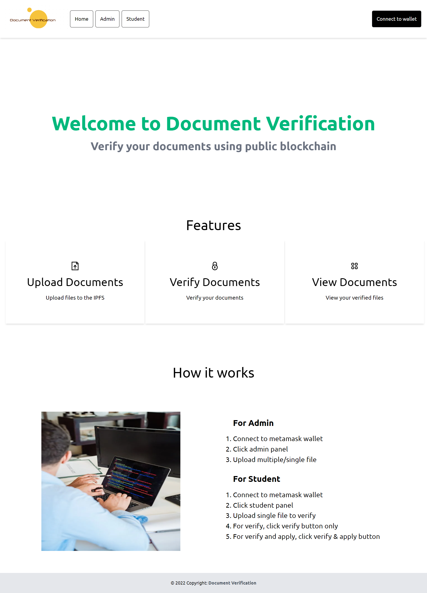

CSE-3200 System Project
Title: Document Verificaiton system using public blockchain
Language & Tools I've used
- VS Code
- Solidty
- Metamask
- Truffle
- Ganache
- Web3.js
- Next.js
- TailwindCSS
Our Project Result
Home Page

Admin Page
Student Page
University Page

How it works
For Admin
- Connect to metamask wallet
- Click admin panel
- Upload multiple/single file
For Student
- Connect to metamask wallet
- Click student panel
- Upload single file to verify
- For verify, click verify button only
- For verify and apply, click verify & apply button
How to run
``
cd frontend
``
npm install
``